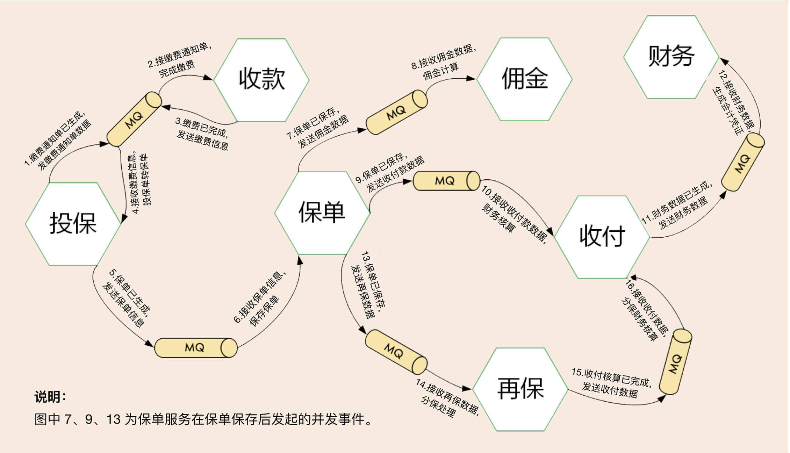
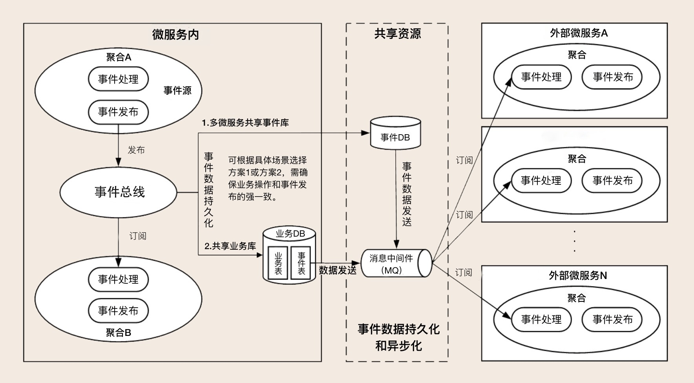
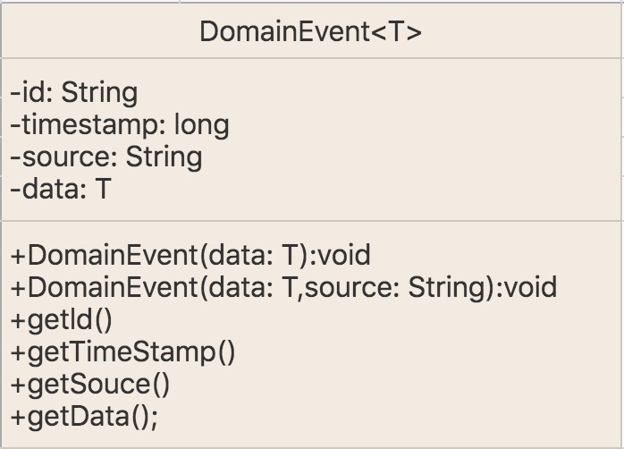
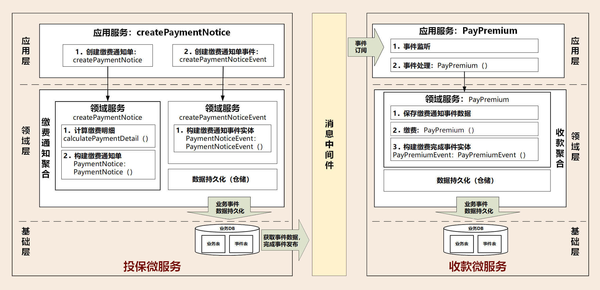

- 00 开篇词 学好了DDD，你能做什么？.md.html
- 01 领域驱动设计：微服务设计为什么要选择DDD.md.html
- 02 领域、子域、核心域、通用域和支撑域：傻傻分不清？.md.html
- 03 限界上下文：定义领域边界的利器
- 04 实体和值对象：从领域模型的基础单元看系统设计.md.html
- 05 聚合和聚合根：怎样设计聚合？.md.html
- 06 领域事件：解耦微服务的关键.md.html
- 07 DDD分层架构：有效降低层与层之间的依赖.md.html
- 08 微服务架构模型：几种常见模型的对比和分析.md.html
- 09 中台：数字转型后到底应该共享什么？.md.html
- 10 DDD、中台和微服务：它们是如何协作的？.md.html
- 11 DDD实践：如何用DDD重构中台业务模型？.md.html
- 12 领域建模：如何用事件风暴构建领域模型？.md.html
- 13 代码模型（上）：如何使用DDD设计微服务代码模型？.md.html
- 14 代码模型（下）：如何保证领域模型与代码模型的一致性？.md.html
- 15 边界：微服务的各种边界在架构演进中的作用？.md.html
- 16 视图：如何实现服务和数据在微服务各层的协作？.md.html
- 17 从后端到前端：微服务后，前端如何设计？.md.html
- 18 知识点串讲：基于DDD的微服务设计实例.md.html
- 19 总结（一）：微服务设计和拆分要坚持哪些原则？.md.html
- 20 总结（二）：分布式架构关键设计10问.md.html
- 答疑：有关3个典型问题的讲解.md.html
- 结束语 所谓高手，就是跨过坑和大海.md.html
06 领域事件：解耦微服务的关键
你好，我是欧创新。今天我们来聊一聊“领域事件（Domain Event）”。
在事件风暴（Event Storming）时，我们发现除了命令和操作等业务行为以外，还有一种非常重要的事件，这种事件发生后通常会导致进一步的业务操作，在 DDD 中这种事件被称为领域事件。
这只是最简单的定义，并不能让我们真正理解它。那到底什么是领域事件？领域事件的技术实现机制是怎样的？这一讲，我们就重点解决这两个大的问题。
领域事件
领域事件是领域模型中非常重要的一部分，用来表示领域中发生的事件。一个领域事件将导致进一步的业务操作，在实现业务解耦的同时，还有助于形成完整的业务闭环。
举例来说的话，领域事件可以是业务流程的一个步骤，比如投保业务缴费完成后，触发投保单转保单的动作；也可能是定时批处理过程中发生的事件，比如批处理生成季缴保费通知单，触发发送缴费邮件通知操作；或者一个事件发生后触发的后续动作，比如密码连续输错三次，触发锁定账户的动作。
那如何识别领域事件呢？
很简单，和刚才讲的定义是强关联的。在做用户旅程或者场景分析时，我们要捕捉业务、需求人员或领域专家口中的关键词：“如果发生……，则……”“当做完……的时候，请通知……”“发生……时，则……”等。在这些场景中，如果发生某种事件后，会触发进一步的操作，那么这个事件很可能就是领域事件。
那领域事件为什么要用最终一致性，而不是传统 SOA 的直接调用的方式呢？
我们一起回顾一下 [第 05 讲] 讲到的聚合的一个设计原则：在边界之外使用最终一致性。一次事务最多只能更改一个聚合的状态。如果一次业务操作涉及多个聚合状态的更改，应采用领域事件的最终一致性。
领域事件驱动设计可以切断领域模型之间的强依赖关系，事件发布完成后，发布方不必关心后续订阅方事件处理是否成功，这样可以实现领域模型的解耦，维护领域模型的独立性和数据的一致性。在领域模型映射到微服务系统架构时，领域事件可以解耦微服务，微服务之间的数据不必要求强一致性，而是基于事件的最终一致性。
回到具体的业务场景，我们发现有的领域事件发生在微服务内的聚合之间，有的则发生在微服务之间，还有两者皆有的场景，一般来说跨微服务的领域事件处理居多。在微服务设计时不同领域事件的处理方式会不一样。
1. 微服务内的领域事件
当领域事件发生在微服务内的聚合之间，领域事件发生后完成事件实体构建和事件数据持久化，发布方聚合将事件发布到事件总线，订阅方接收事件数据完成后续业务操作。
微服务内大部分事件的集成，都发生在同一个进程内，进程自身可以很好地控制事务，因此不一定需要引入消息中间件。但一个事件如果同时更新多个聚合，按照 DDD“一次事务只更新一个聚合”的原则，你就要考虑是否引入事件总线。但微服务内的事件总线，可能会增加开发的复杂度，因此你需要结合应用复杂度和收益进行综合考虑。
微服务内应用服务，可以通过跨聚合的服务编排和组合，以服务调用的方式完成跨聚合的访问，这种方式通常应用于实时性和数据一致性要求高的场景。这个过程会用到分布式事务，以保证发布方和订阅方的数据同时更新成功。
2. 微服务之间的领域事件
跨微服务的领域事件会在不同的限界上下文或领域模型之间实现业务协作，其主要目的是实现微服务解耦，减轻微服务之间实时服务访问的压力。
领域事件发生在微服务之间的场景比较多，事件处理的机制也更加复杂。跨微服务的事件可以推动业务流程或者数据在不同的子域或微服务间直接流转。
跨微服务的事件机制要总体考虑事件构建、发布和订阅、事件数据持久化、消息中间件，甚至事件数据持久化时还可能需要考虑引入分布式事务机制等。
微服务之间的访问也可以采用应用服务直接调用的方式，实现数据和服务的实时访问，弊端就是跨微服务的数据同时变更需要引入分布式事务，以确保数据的一致性。分布式事务机制会影响系统性能，增加微服务之间的耦合，所以我们还是要尽量避免使用分布式事务。
领域事件相关案例
我来给你介绍一个保险承保业务过程中有关领域事件的案例。
一个保单的生成，经历了很多子域、业务状态变更和跨微服务业务数据的传递。这个过程会产生很多的领域事件，这些领域事件促成了保险业务数据、对象在不同的微服务和子域之间的流转和角色转换。
在下面这张图中，我列出了几个关键流程，用来说明如何用领域事件驱动设计来驱动承保业务流程。

事件起点：客户购买保险 - 业务人员完成保单录入 - 生成投保单 - 启动缴费动作。
\1. 投保微服务生成缴费通知单，发布第一个事件：缴费通知单已生成，将缴费通知单数据发布到消息中间件。收款微服务订阅缴费通知单事件，完成缴费操作。缴费通知单已生成，领域事件结束。
\2. 收款微服务缴费完成后，发布第二个领域事件：缴费已完成，将缴费数据发布到消息中间件。原来的订阅方收款微服务这时则变成了发布方。原来的事件发布方投保微服务转换为订阅方。投保微服务在收到缴费信息并确认缴费完成后，完成投保单转成保单的操作。缴费已完成，领域事件结束。
\3. 投保微服务在投保单转保单完成后，发布第三个领域事件：保单已生成，将保单数据发布到消息中间件。保单微服务接收到保单数据后，完成保单数据保存操作。保单已生成，领域事件结束。
\4. 保单微服务完成保单数据保存后，后面还会发生一系列的领域事件，以并发的方式将保单数据通过消息中间件发送到佣金、收付费和再保等微服务，一直到财务，完后保单后续所有业务流程。这里就不详细说了。
总之，通过领域事件驱动的异步化机制，可以推动业务流程和数据在各个不同微服务之间的流转，实现微服务的解耦，减轻微服务之间服务调用的压力，提升用户体验。
领域事件总体架构
领域事件的执行需要一系列的组件和技术来支撑。我们来看一下这个领域事件总体技术架构图，领域事件处理包括：事件构建和发布、事件数据持久化、事件总线、消息中间件、事件接收和处理等。下面我们逐一讲一下。

1. 事件构建和发布
事件基本属性至少包括：事件唯一标识、发生时间、事件类型和事件源，其中事件唯一标识应该是全局唯一的，以便事件能够无歧义地在多个限界上下文中传递。事件基本属性主要记录事件自身以及事件发生背景的数据。
另外事件中还有一项更重要，那就是业务属性，用于记录事件发生那一刻的业务数据，这些数据会随事件传输到订阅方，以开展下一步的业务操作。
事件基本属性和业务属性一起构成事件实体，事件实体依赖聚合根。领域事件发生后，事件中的业务数据不再修改，因此业务数据可以以序列化值对象的形式保存，这种存储格式在消息中间件中也比较容易解析和获取。
为了保证事件结构的统一，我们还会创建事件基类 DomainEvent（参考下图），子类可以扩充属性和方法。由于事件没有太多的业务行为，实现方法一般比较简单。

事件发布之前需要先构建事件实体并持久化。事件发布的方式有很多种，你可以通过应用服务或者领域服务发布到事件总线或者消息中间件，也可以从事件表中利用定时程序或数据库日志捕获技术获取增量事件数据，发布到消息中间件。
2. 事件数据持久化
事件数据持久化可用于系统之间的数据对账，或者实现发布方和订阅方事件数据的审计。当遇到消息中间件、订阅方系统宕机或者网络中断，在问题解决后仍可继续后续业务流转，保证数据的一致性。
事件数据持久化有两种方案，在实施过程中你可以根据自己的业务场景进行选择。
持久化到本地业务数据库的事件表中，利用本地事务保证业务和事件数据的一致性。
持久化到共享的事件数据库中。这里需要注意的是：业务数据库和事件数据库不在一个数据库中，它们的数据持久化操作会跨数据库，因此需要分布式事务机制来保证业务和事件数据的强一致性，结果就是会对系统性能造成一定的影响。
3. 事件总线 (EventBus)
事件总线是实现微服务内聚合之间领域事件的重要组件，它提供事件分发和接收等服务。事件总线是进程内模型，它会在微服务内聚合之间遍历订阅者列表，采取同步或异步的模式传递数据。事件分发流程大致如下：
如果是微服务内的订阅者（其它聚合），则直接分发到指定订阅者；
如果是微服务外的订阅者，将事件数据保存到事件库（表）并异步发送到消息中间件；
如果同时存在微服务内和外订阅者，则先分发到内部订阅者，将事件消息保存到事件库（表），再异步发送到消息中间件。
4. 消息中间件
跨微服务的领域事件大多会用到消息中间件，实现跨微服务的事件发布和订阅。消息中间件的产品非常成熟，市场上可选的技术也非常多，比如 Kafka，RabbitMQ 等。
5. 事件接收和处理
微服务订阅方在应用层采用监听机制，接收消息队列中的事件数据，完成事件数据的持久化后，就可以开始进一步的业务处理。领域事件处理可在领域服务中实现。
领域事件运行机制相关案例
这里我用承保业务流程的缴费通知单事件，来给你解释一下领域事件的运行机制。这个领域事件发生在投保和收款微服务之间。发生的领域事件是：缴费通知单已生成。下一步的业务操作是：缴费。

事件起点：出单员生成投保单，核保通过后，发起生成缴费通知单的操作。
- 投保微服务应用服务，调用聚合中的领域服务 createPaymentNotice 和 createPaymentNoticeEvent，分别创建缴费通知单、缴费通知单事件。其中缴费通知单事件类 PaymentNoticeEvent 继承基类 DomainEvent。
\2. 利用仓储服务持久化缴费通知单相关的业务和事件数据。为了避免分布式事务，这些业务和事件数据都持久化到本地投保微服务数据库中。
\3. 通过数据库日志捕获技术或者定时程序，从数据库事件表中获取事件增量数据，发布到消息中间件。这里说明：事件发布也可以通过应用服务或者领域服务完成发布。
\4. 收款微服务在应用层从消息中间件订阅缴费通知单事件消息主题，监听并获取事件数据后，应用服务调用领域层的领域服务将事件数据持久化到本地数据库中。
\5. 收款微服务调用领域层的领域服务 PayPremium，完成缴费。
\6. 事件结束。
提示：缴费完成后，后续流程的微服务还会产生很多新的领域事件，比如缴费已完成、保单已保存等等。这些后续的事件处理基本上跟 1～6 的处理机制类似。
总结
今天我们主要讲了领域事件以及领域事件的处理机制。领域事件驱动是很成熟的技术，在很多分布式架构中得到了大量的使用。领域事件是 DDD 的一个重要概念，在设计时我们要重点关注领域事件，用领域事件来驱动业务的流转，尽量采用基于事件的最终一致，降低微服务之间直接访问的压力，实现微服务之间的解耦，维护领域模型的独立性和数据一致性。
除此之外，领域事件驱动机制可以实现一个发布方 N 个订阅方的模式，这在传统的直接服务调用设计中基本是不可能做到的。